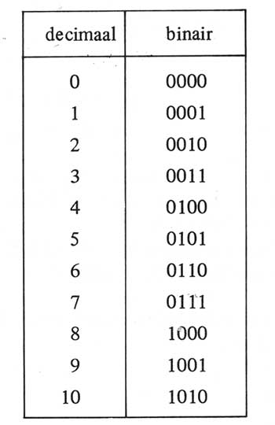

Binair stelsel
Het binaire stelsel is een rekenmethode die gebruik maakt van de cijfers 0 en 1. Het getal 0 staat voor uit. En het getal 1 staat voor aan. Binnen het binaire stelsel zijn er bits en Bytes. Met een bit wordt bedoeld een enkele binair cijfer, 0 of 1. En met een byte wordt een reeks van 8 bits bedoeld. Om tot een bepaald getal te komen worden de bits vermenigvuldigd met machten. Het binaire stelsek werkt met machten van 2. (1, 2, 4, 8 enz.)
Uitleg video
https://www.youtube.com/watch?v=OpaB2SaNIyA , deze link leidt tot een uitleg filmpje over het binaire stelsel. Dit filmpje heeft mij geholpen het binaire stelsel beter te begrijpen en om er beter mee te kunnen rekenen, daarom vind ik dit een goed filmpje voor extra uitleg.
